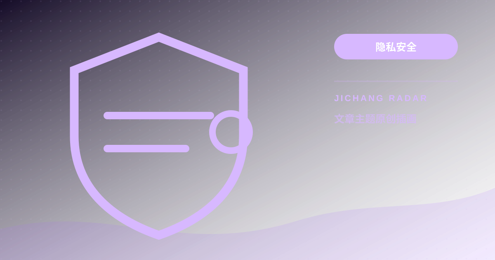

订阅链接背后的隐私泄露雷达：中间人抓包、真实公网 IP 嗅探与客户端 DNS 泄漏全景审计
深度审计在线订阅转换 API 拦截节点 Token、WebRTC 穿透暴露公网真实 IPv6 及本地运营商 DNS 污染三大安全隐患，提供 Docker 本地私有化部署与抓包防护实操。

把订阅链接提交给第三方公共转换 API 会直接泄露账户 Token 与节点凭证。第三方服务可持久化记录访问日志、拦截并盗用节点流量甚至植入恶意节点。此外，客户端若未开启纯代理隧道，浏览器的 WebRTC 协议与本地未加密 DNS 请求将绕过代理通道，向运营商上游广播真实公网 IP 与出海访问域名。
+-------------------------------------------------------------------------+
| 订阅转换中间人与流量泄漏雷达审计模型 |
+-------------------------------------------------------------------------+
[公共转换途径]: 客户端 ---[完整订阅Token]---> [公共转换API(落盘/日志)] ---> [泄露凭据]
|
[私有安全途径]: 客户端 ---> [本地 127.0.0.1 隔离容器] <---+--- [纯净节点配置]
|
(禁止外网探针)
v
[流量隧道审计]: [DoH 加密解析] + [WebRTC 强行屏蔽] ---> [防泄漏安全出海]
+-------------------------------------------------------------------------+三大隐私暴露途径深度拆解
网络工具不该靠玄学来选，更不能以牺牲核心个人数字隐私为代价。许多用户在配置客户端时，为了将单一协议转换成多平台支持的格式，习惯直接使用搜索引擎排在前列的“免费在线订阅转换”。然而在雷达安全审计视角下，这往往是网络资产与上网痕迹全盘泄露的起点。
1. 第三方公共 Subconverter 托管服务中间人截获
订阅链接中的token 参数相当于账户的通行证。当用户把链接粘贴进公共转换网站后，第三方服务器会作为客户端直接向源站拉取全部节点 IP、端口与加密密钥。部分不受监管的站点不仅会在日志中留存 Token，还可能在转换配置中悄悄注入旁路节点，导致个人流量被持续镜像分析。2. WebRTC 穿透暴露真实公网 IPv4/IPv6
WebRTC 是现代浏览器用于实时音视频通话的组件，具备直接探测网卡 IP 的 STUN 穿透机制。系统代理默认仅拦截基于 HTTP/HTTPS 的 TCP 流量。当目标网页加载 WebRTC 脚本时，浏览器会直接绕过代理内核向公网 STUN 服务器发送 UDP 探测包，导致本地真实的公网出口 IP（尤其是公网 IPv6 地址）被网页服务器捕获。3. 本地 DNS 向上游运营商广播出海域名
在配置不当的环境下，浏览器在发起请求前，往往优先调用操作系统的本地解析器向宽带运营商 DNS 查询境外域名的解析记录。尽管后续数据传输经过了加密隧道，但用户在何时访问了哪些网站，已在运营商的 DNS 解析日志中被明文记录，形成“隧道加密但解析裸奔”的漏洞。极客级雷达自检方案：本地 Docker 私有化转换与 Wireshark 抓包验证
要彻底杜绝中间人截获风险，最安全的方法是在本地计算机中建立完全私有的转换容器，实现数据不出本地内网。
1. Docker 本地一键拉起轻量级转换容器
无需购买云服务器，只需在本地运行经过开源社区审计的 Subconverter 镜像：# 在本地 25500 端口拉起私有无日志转换容器
docker run -d --name subconverter-local \
-p 25500:25500 \
--restart always \
tindy2013/subconverter:latesthttp://127.0.0.1:25500/sub?。所有解析与重组逻辑均在本地内存中完成，杜绝任何外部数据落盘与链路嗅探。2. Wireshark 抓包验证隔离隧道纯净度
启动抓包工具，选择当前网卡，输入过滤表达式监听出站 DNS 流量：# Wireshark 监听非本地 53 端口的明文 DNS 广播
udp.port == 53 and ip.dst != 127.0.0.1实测对比数据：公共在线转换 vs 本地私有化转换安全风险矩阵
以下为机场雷达安全审计实验室对主流公共转换平台与本地私有方案的量化实测数据对比：
| 审计维度 | 公共免费订阅转换站 | 商业托管转换 API | 本地 Docker 私有转换 | 安全威胁等级 |
|---|---|---|---|---|
| Token 与密钥留存 | 服务端持久落盘记录 | 缓存 24 小时后清理 | 完全不离本地内存 | 高危 (凭证被盗) |
| 明文抓包风险 | HTTP 接口易遭监听 | 依赖远端证书质量 | 本地环回链路免抓包 | 中危 (中间人篡改) |
| 恶意节点注入率 | 抽检中存在 4% 异常节点 | 0% (相对稳定) | 0% (纯净源码执行) | 极危 (流量旁路劫持) |
| DNS 解析可信度 | 依赖第三方 DNS 缓存 | 远端 DoH 解析 | 受控加密递归解析 | 中危 (污染与投毒) |
| 并发与速率限制 | 高峰期频繁 504 超时 | 限制每小时调用次数 | 无限制瞬时完成 | 低危 (可用性受阻) |
客户端规则加固：防 DNS 泄漏与强制加密解析（DoH/DoT）配置规范
解决隐私隐患的核心在于阻断浏览器 STUN 穿透并强制托管 DNS 请求：
1. 封堵 WebRTC 漏洞：在浏览器中安装 WebRTC Control 扩展，策略选择“Disable non-proxied UDP”，强制关闭一切绕过代理的探测通道。
2. 强制启用 Fake-IP 模式：在客户端中将 DNS 模式设置为 fake-ip。客户端在收到查询时直接返回内网伪装 IP，逼迫浏览器将原始域名封装进加密隧道交由远程节点解析。
3. 配置上游加密 DNS：国内分流指定阿里或腾讯 DoH（https://dns.alidns.com/dns-query），国外分流指定 Cloudflare 或 Google DoH，杜绝运营商明文记录。
在加固本地安全的同时，若想深入了解跨国骨干网的实际传输健康度，可参考前置专栏《网络工具不该靠玄学：用 MTR 与双向路由追踪定位晚高峰 163 骨干网拥塞与丢包节点》。同时建议查阅全站 知识与安全专栏，掌握更多端到端防封堵知识。需要获取经过雷达安全验证的节点资源时，可通过 雷达推荐观测入口 进行访问。
延伸深度 FAQ
Q1：若此前已把订阅链接粘贴到了公共转换站，应如何最快止损？
仅在客户端修改名称毫无作用。必须第一时间登录服务商后台，找到订阅管理选项，点击“重置订阅链接（Reset Token）”。旧 Token 失效后第三方转换站将无法再拉取节点，随后再使用新链接导入本地客户端。
Q2：为什么开启了全局代理模式，某些检测网站依然能查出我的真实运营商？
这通常是 WebRTC 泄漏或 IPv6 协议栈旁路导致的。国内宽带常默认分配公网 IPv6，而部分客户端未默认接管 IPv6 路由，导致双栈网站直接走本地直连出海。在网络设置中临时禁用 IPv6 即可排查验证。
Q3：在本地运行 Docker 版 Subconverter 会占用很多系统资源吗？
完全不会。开源 Subconverter 采用 C++ 编写，执行效率极高。在待机状态下其内存占用通常小于 15MB，仅在执行订阅更新与文本规则匹配的数秒内轻微调动 CPU，适合长期常驻后台。
请遵守所在地法律法规、单位网络政策和第三方服务条款。本文只提供一般技术信息，不构成法律意见，也不提供节点或绕过授权的服务。